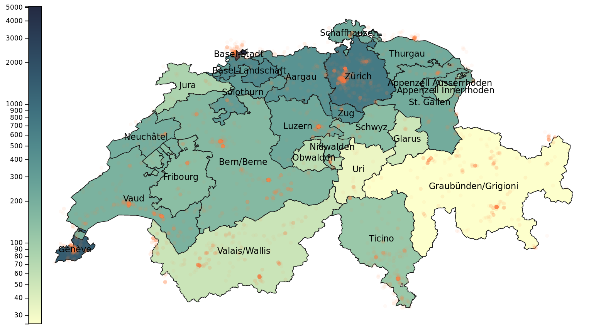

In this assignment, you will create a choropleth map of Switzerland and visualize Instagram posts on top of it. We collected this dataset (52 378 posts) during the Easter 2016, from 24/03/2016 to 30/03/2016 – the time of increasing user activity on Instagram. You can find an example of a similar visualization of this dataset here.
locations.csv - GPS coordinates of Instagram postscantons-population.csv - population density in each cantonch-cantons.json - TopoJSON representation of Switzerland, obtained from https://github.com/greenore/swiss-mapsThis task requires loading all three datasets. We can draw the plot only after all of them have been loaded. However JS’s loading code is asynchronous. To wait for an asynchronous operation to complete, we use Promises. We wait for several promises to finish by using Promise.all.
Remember this method if you need to load several data files.
It is convenient to represent our maps in the TopoJSON format. Essentially it encodes the borders of regions (such as countries or cantons) on the map. D3.js has an API for quickly drawing these.
TopoJSON files are available for many areas:
We parse them using the topojson library:
const topojson = topojson.feature(json_object, json_object.objects.cantons);
const topojson_objects = topojson.features; // <- we use this with d3.jsThe second argument specifies what kind object we are drawing, for a world map these could for example be countries not cantons.
Display the objects in topojson_objects in console to see what data they contain. Store each canton’s population density in topo_obj.properties.density. (match them by id) We will use that for plotting later.
Projections are an equivalent of scales which we used in previous exercises, but they convert from geographical coordinates [longitude, latitude] to the SVG space.
Different projections are available D3.js projections There are many ways of projecting a sphere’s surface on a plane, each of them imperfect in its own way. Choose the one you like the most. For example, you can use d3.geoNaturalEarth1.
We need to setup the projection using these properties
.center([center_lon, center_lat]) - center of your view in map geographical coordinates. Find the geographical center of Switzerland..scale( scale ) - experiment with this to get a desired zoom of the map. If you have a zoom feature, you can change the scale when the user wants to zoom in/out. For the map of Switzerland we advise trying a scale above 10000..translate( [center_x, center_y] ) - center in SVG coordinate space (equivalent to scale.range)Regions are displayed as SVG paths. Like in the color histogram exercise, we need a d3.js path generator which converts the data into a path’s "d" attribute. For geographical data we use d3.geoPath and give it your chosen projection.
Color each canton (set the path’s fill) on the choropleth map according to its population.
Because the popoulation density is very varied, we need to use a logarithmic scale d3.scaleLog. The range of a scale can be a pair of colors. Interpolating in the hue (HSV space) can be aethetically pleasing - to do so, use d3.interpolateHcl:
my_scale.interpolate(d3.interpolateHcl);Give the created regions the canton CSS class which defines the borders (see index.html to edit them).
Please add the names of each canton:
canton-label (see index.html to edit the text style)transform attribute to move the text in the proper place (about SVG transforms) The center of the region can be calculated with the same path generator that we used to draw the regions using centroid:let center = path_generator.centroid(geo_contour)Please display a circle for each Instagram post (if this is slow to load, you can use every 10-th post instead). It is very similar to our scatter plot, but we use the geographic projection we defined before:
let svg_position = projection([longitude, latitude])If we use colors on a map, we have to explain what they mean. We have provided code to create a colorbar. Please call that after you have constructed your color scale and set its domain and range.
this.makeColorbar(this.svg, color_scale, [50, 30], [20, this.svg_height - 2*30]);